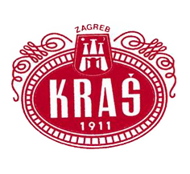

Kraš
Kako Kraš na vlastitoj sranici piše, već gotovo sto godina njihovi proizvodi zaslađuju svakodnevicu mnogobrojnih stanovnika Hrvatske, šire okolice i svijeta.
Njihov početak kreće od godine 1911. kada je tvornica UNION započela svoju proizvodnju čokolade, koji ubrzo postaje "carski i kraljevski dobavljač bečkog dvora".
Desetljeće kasnije tvrtka BLIZNJAK započinje proizvodnju vafla, keksi i dvopeka, te također veoma brzo postaje vodeća u toj industriji. Uspješnost tih tvrtki je 1950.godine rezultirala ujedinjenjem s još nekoliko manjih proizvođača konditorskih proizvoda.
Iste godine tvrtka dobiva ime Josip Kraš, te nastavlja svoj rad proizvodnjom tri grupe konditorskih proizvoda: kakao proizvoda, bombona, te keksa i vafla.
Neprestanom modernizacijom i ulaganjem u tvrtku, te zapošljavanjem stručnjaka koji na originalnim Kraševim recepturama primjenjuju nova znanja, te time dolaze do neprestanog povećanja asortimana, tvrtka zadržava vodeće mjesto u industriji. Godišnja proizvodnja konditorskih proizvoda je preko 33 000 tona, od kojih je skoro polovica namijenjena za izvoz diljem svijeta.
Čokoladni proizvodi koji proslavili ovu tvrtku su Bajadera, Griotte, Dorina, Životinjsko carstvo, Domačice, Ledene kocke, Kraš Ekspres i mnogi drugi.
Za daljnje informacije savjetujemo posjet web-stranici Kraša.